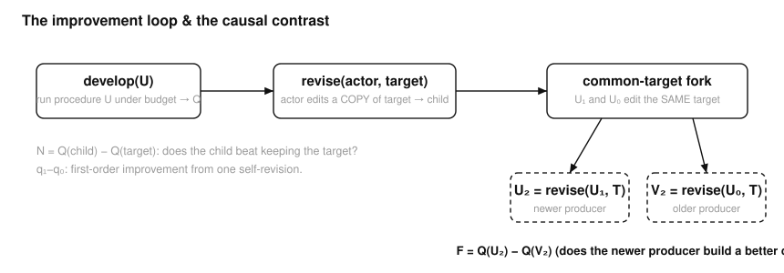
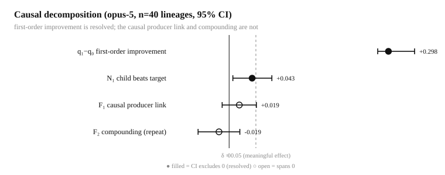
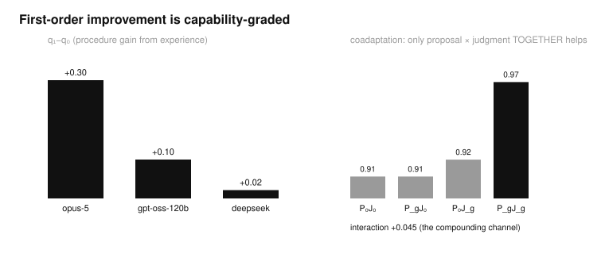
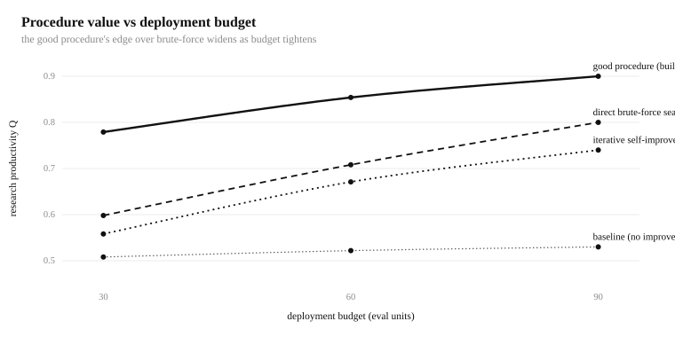

What it measures
Recursive self-improvement (RSI) is central to frontier AI, yet has almost no rigorous, controlled benchmark. KernelAscent decomposes it into separately reported axes instead of one headline number:
Capability
Can the agent produce a correct, fast solution? Two substrates: GPU-kernel optimization (fp32-gold correctness + speedup vs min(eager, torch.compile)) and a code bug-fix bank curated by a single strong model and executable-validated.
First-order improvement
Does one self-revision of the research procedure raise the quality of what it then produces? Measured as q₁−q₀ and N (does the child beat the unchanged target).
Causal recursion
The hard part. F = Q(U₂) − Q(V₂): a newer producer and an older producer edit the same target; does the newer build a better child, and does it repeat (F₂)?
Full running record and every number: BENCHMARK_LOG.md. Instruments are validated by deterministic calibration; every effect is reported as an estimate with a 95% CI against a prespecified meaningful effect δ = 0.05.
The mechanism
An agent's state U is its executed research procedure (how it proposes, evaluates, and selects). develop runs the procedure on a fresh task under a fixed budget; revise lets an actor edit a copy of a target procedure to produce a child. In a causal fork, two different actors edit the identical target — so a later actor earns credit only if it produces a genuinely better child.

This actor/target separation is what turns "the score went up" into a testable causal claim. A rising task score, or editable source code, is not enough — the inherited procedure must causally cause a better next producer.
Findings
Across four substrates — the kernel flagship, a verifier-improvement loop, a GPU inference world, and an efficiency-of-experimentation lab engineered to favor recursion — plus live-model runs, the picture is consistent and well-controlled.



What is resolved
Agents improve their procedure with experience (opus q₁−q₀ = +0.30 > gpt-oss +0.10 > deepseek +0.02); the child beats the unchanged target (N₁ resolved > 0 for two models); the gain beats a frozen-procedure-with-growing-memory control — so it is the procedure change, not accumulated data.
A procedure evolved on one task family, deployed on a structurally different family, beats the baseline there by +0.091 [0.037, 0.146] — nearly matching a procedure evolved on that family directly.
The good procedure beats brute-force search by +0.15 → +0.18 as the deployment budget tightens.
What is a bounded negative
F₁ = +0.019 [−0.013, 0.051] at n = 40 — bounded below δ = 0.05. A promising small-sample value (+0.042 at n = 16) regressed to ≈ 0 once properly powered.
F₂ ≈ 0 on every substrate — including one built to give recursion its best chance. The improvement's value is front-loaded into the first step.
Iterative self-improvement underperforms building the good procedure directly (−0.18), and matches direct search at equal total budget (break-even → ∞).
Honest one-line claim: agents improve their research procedure with experience — first-order, causal, capability-graded, and transferable — but this does not (yet) produce a resolved causal producer advantage or recursive compounding. A clean bounded-negative on recursion, with genuine positive findings, on a qualified opportunity — not a dead instrument.
Capability leaderboard
Kernel track — fixed Medium tasks, correct-rate and fast-rate (fast = beats torch.compile). Two walls; the frontier is separated by speed.
| Model | Kind | correct | fast | meanC |
|---|
Sortable — click a column header. Full 22-model table and the RSI decomposition per model live in BENCHMARK_LOG.md.
Dataset & splits
The curated code-task bank is difficulty-graded and executable-validated (a single strong curator, family-diversity-forced, then re-validated + deduped). It ships with a public / held-out split so the leaderboard can't be overfit.
Public split
75 tasks — easy 21 · medium 17 · hard 18 · ultra 19, each with 14–16 distinct problem families. On HuggingFace and in dataset/tasks/public/.
Held-out test
34 tasks (~35%), split deterministically by name hash, never published — the private leaderboard set. Kept gitignored; maintainers score submissions on it.
Kernel track
A separate procedural GPU-kernel task bank (1000+ tasks, 6 families) powers the capability leaderboard and the kernel causal-RSI runs.
from datasets import load_dataset
ds = load_dataset("muahmed7338/kernelascent-tasks") # splits: easy / medium / hard / ultra
task = ds["medium"][0] # fix task["buggy_code"] to match task["reference_code"] on sampled + edge inputs
Submit a model
Everything is reproducible and the leaderboard is scored on a private held-out split. Code, harness, and the full record are on GitHub.
pip install "kernelascent @ git+https://github.com/ahmd-mohsin/KernelAscent" # capability (API model, no GPU to generate; grade on any GPU): kernelascent gen --model us.anthropic.claude-opus-5 --tiers L1,L2 --out runs/opus kernelascent grade --candir runs/opus --out runs/opus/summary.json
Then open a model-submission issue or a PR. See SUBMISSION.md.